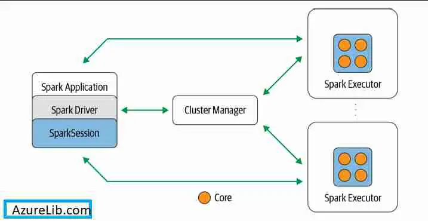

Spark Configurations Details¶
Based on Basic Spark Configuration Guideline, we design a configuration tool for development purpose.
By using this tool, one does not need to specify each setting individually any more. The tool will provide a convenient way to allocate sufficient and optimal resource when the developer provide the job size and load.
Local Mode¶
For local mode, number of executor is set to be 1, as all the cores are on the same computer. The total core/memory used in Spark takes one third of the available cores/memory on the node. to ensure smooth process for other usess.
For heavy load that involves over 60\% of tasks in shuffling, joining, and aggregating, etc., one half of the resources will be used. However, if it leads to insufficient core of memory, the program will be terminated
for local core, with 1 left for application master , we set driver has 1/3 of the available core, and leave the reamining cores to executors.
For local memory, We need to get the total memory for each executor and drive before setting up the Spark memory. We also need to make sure to reserve 10\% for memoryOverhead.
In particular., we define total available core for the local node to be N, partition_size as M_p, and total memory to be M, then we design the resources as below.
| Resource | Design |
|---|---|
| executor number (N_e) | 1 |
| core per executor (C_e) | \min(zS/M_p, [N/3^2])\times [(F+1)/2] |
| driver core number (C_d) | \max(1, \min([N/3] - C_e\times N_e - 1, F+1)) |
| driver memory (M_d) | ceil(\min(zS\times [\frac{F+1}{2}], M/3^2\times 0.9)) |
| executor memory (M_e) | ceil(\max(1, \min(\min(r,5)\times \max(M_p, [\frac{zS}{C_e}])\times C_e[\frac{F+1}{2}]/0.4, (M/3 - M_d/0.9)\times 0.9))) |
[X] is the integer part for X.
Yarn Mode¶
For yarn mode, the design is different then local mode , scince the cluster is shared with all team members, and cannot be solely used by one user, so an optimal design is much better then taking all the resources up. The design is based on file size and file load
In a typical yarn cluster, it usally provides sufficient memory and cores to use. For a spark session, it is good practice to request optimal memory and core numbers , instead of taking up as much as one can.
For example, we consider a Spark task on a small data( e.g, with 256MB size) and the most complicated calculation for this data is summerizing statistics. if we request 100 cores in 50 executors, and 2GB for each executor, we will take
-
a total of 150 cores: since each executor reservers 1 core for application master, the total core number is 100 + 50 = 150
-
125GB memory: the total required memory includes the reserved 300MB memory.In addition each executor will needs to reserve 10\% of the executor memory for memory overHead, so the total memory used is ((1+0.1)\times2GB+300MB)\times 50 =125GB.
For such small data and simple calculate, it not only wastes a lot of resources not arhieving best performance, but also may result in whats's known as the "small file problem" - many small partition files, introducing an inoridinate amount of disk I/O and performance degradation thanks to filesystem operations such as opening, closing, and listing directories, which on a distributed filsystem can be slow.
We do not have a magic schema to design the best allocation for all types of jobs. However, based on experience and multiple resources , we design an algorithm to try to use best of the resources while achieving high performance.
-
Available Resources
In HWX server, there are a total of 155 nodes (i.e executors), 70.39TB memory and 11,780 cores. For the Card usage, We have an effective capacity of 1413 cores and 8.45TB (i.e., 8649GB)
As the clusters are shared among all team members, we need to use the resources wisely, and try to request the resources within capacity with best performance.
Based on these numbers, we recommend that the maximum cores for ine application should be within 500, and maximum memory 29GB, which is one thrid of the queue allowance.
Although each cluster nodes has 78 cores, and 56GB memory in average, to realize best perfomnce, we limit the core number for each executor to 5, as recommended by the MIT team. And to make sure other uses can run their applications successfully, we further limit the executor memory to 25GB. Memory used more then that may cause OOM issues for all the applications running on the clusters.
Driver Resources¶
We need to set up sufficient cores and memory for the driver nodes. At a high level on spark Architecture, a Spark apllication consists of a driver program that is responsible for orchestrating parallel operations on the spark cluster. The driver acces is distributed components in the cluster-the Spark executors and cluster manager-through a SparkSession. See the figure below in Learning Spark , 2nd Edition .

The Spark driver has multiple roles: it communicates with the cluster manager; it requests resources (CPU, memory, etc) from the cluster manager for Spark's executors (JVMs); and it transforms all the Spark operations into DAG computations, schedules them, and distributes their execution as tasks across the Spark executors.Once the resources are allocated, it communicates directly with the executors.
Therefore , it is very important the driver takes abundant resources. We define the job load factors based on the work load defined above:
| Job Load Factor F | Work Load |
|---|---|
| 1 | Light(L) |
| 2 | Medium(M) |
| 3 | Heavy(H) |
| 4 | Medium Heavy (MH) |
| 5 | Extremely Heavy (XH) |
To achieve best perfomance, we allocate at least 2 cores to the driver, even for small jobs. However, the total core number should be within one third as of total core number in one cluster node (i.e., 25 cores), which will be served as the driver. We then design the driver core number C_d as:
$$ C_d = \min(25, \max(2, ceil(zS\times f_0/2))), $$ where f_0=2\log_2^{F+1}; and driver memory M_d in GB as:
in which we set the driver memory at least double of the data size , multipled by the job load factor. Even if the data is exploded, the main operation is in clusters instead of the driver, so we do not need to assign the driver huge memory. We set a limit of 40GB to reserve sufficient memory use.
ceil(x, t) means the number x will be rounded to nearest t. We round the memory by 8GB with common practice, and round core number by 4 so that it can be better allocated to executors.
Total Core Number for Executors¶
When a data is loaded in Spark, Spark recognizes its partition numbers, and allocates each partition with one core, if the cores are sufficient.If the core number is greater than the partition number, the remaining cores may not participate in Spark Jobs, Hence wsate the resources; if the core number is smaller than the partition number, it will need to take more time to work on remaining partitions.
By default, the size of a partition in spark is 128MB, Smaller partition size may lead more I/O operations and communications among cores accross multiple executors (i.e cluster nodes), hence decrese the work performance;while larger partition size may slow down the calculation spped by individual cores. Therefore, balancing between partition number and size is extreamly important for Spark resource allocation.
We make the following two assumptions :
- The default partition size is 128MB
- The maximal core we request for executors is 750.
We design the initial total core number C_1 as $$ C_1 = \min(750, z\times ceil(S) \times f_0 \times 2^3). $$
Memory Allocation¶
To design the executor memory, we need to firstly decide the number of cores for each executor. This is consided based on job load and job size.
By deafult, each partition is handled by one core, and each partition takes 128MB. From the memory layout, if an executor has only one core to work for one partition, We need to assign (128/0.4 + 300) = 620MB. For small josb, this may be sufficient; but for larger or heavier jobs, we suggest at least twice larger memory for heavy suffle operations
More cores to the same executor will reduces communication time, and it will help the executors locate closest partitions as many as possible.' However, due to the memory and core limit, We need to balance betwwen them.
We define the partition size as M_p MB, and design the core number per executor C_e as:
$$ C_e = \min(F, ceil(\frac{25\times 2^{10}}{F\times M_p /0.4 + 300})). $$ The maximum C_e is \max(F)=5, which is consitent with the MIP teams's recemmedation.
For the total memory on each executor, defined as M_e in GB, we design
$$ M_e = \min(25, ceil(C_e \times \frac{\max(M_p \times f_0, zSr/C_1)}{0.4} + 330\times 2^{-10}, 1)) $$ In this defination, zSr/C_1 estimates the memory each core will use for data storage, and M_p\times F estimates the memory for complicated partition calculations
Executor Number¶
Finally, we define the executor number N_e, as this is the configuratio parameter set in the Spark Session. Based on the total core number C_1 and core number per executor C_e, and that there is 155 total executors, we have:
With this defination, the total core C_2=N_e\times C_e we request for executors may be slightly more than C_1, since the cores need to be evenly distributed across the executors. Therefore, we expect serveral spare cores by this design.
Additional Adjustment¶
As HWX uses Yarn to manage all the resources, the actual resource allocation scheme may be not exactly as the same as theories listed above. By experience, we make some ad-hoc adjustment to fit better to the HWX servers, so better performance can be reached.
Total Requested Resources¶
Each executor will reserve one extra core for application master, so the total core we request for the entire Spark session is
The total memory calaculation is more complicated. In addition to the reserved memory on each executor, the executor also reserve 10\% of the memory for memory buffer, which is callwd "memory OverHead".
Nevertheless, it is very likely that the cluster administrators have set some additional memory settings, so that the real memory allocation is different from what we have calculated bases on knowledge from the books.
We estimate the total memory by including the driver memory as
However, Please note that this only an estimate. Please consult with the cluster administer for actual resource allocation algorithm.
Large Memory Use with Data Exploration¶
In model forecast for CCAR and CECL, it is a common practice to explode data, which expands the data exponentially. In this situation, large memory needs to be reserved to support the program running succesfully .
To allocation enough resource while not talking too much, one needs a lot of experince. Our tool provides a function that will request sufficient resource to run the program with no memory errors. However, the provided resources may not be optimal, as different forecast engine have different requirment, and the tool cannot provide a FTT-FOR-ALL approach.
Nevertheless , one may use the tool as a strting point and tune the resources to optimal based on experince.